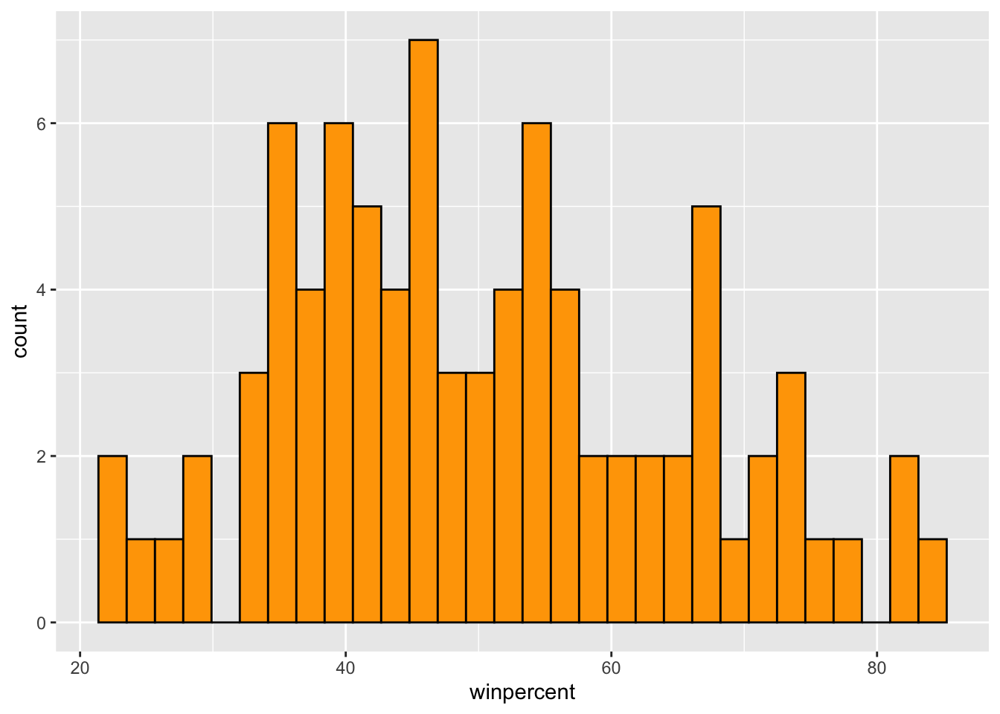
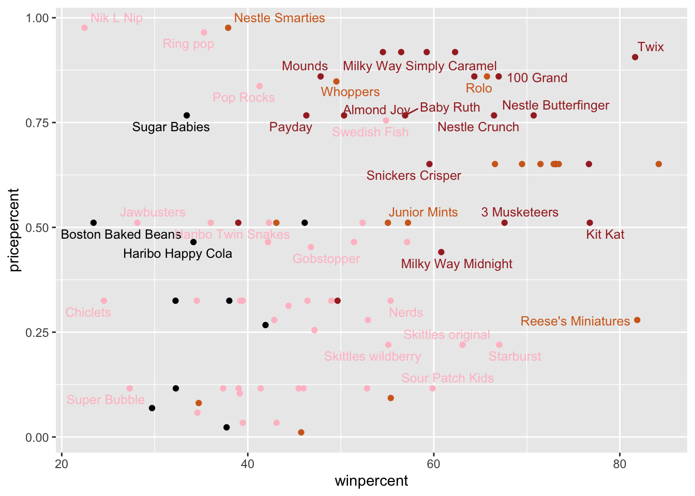
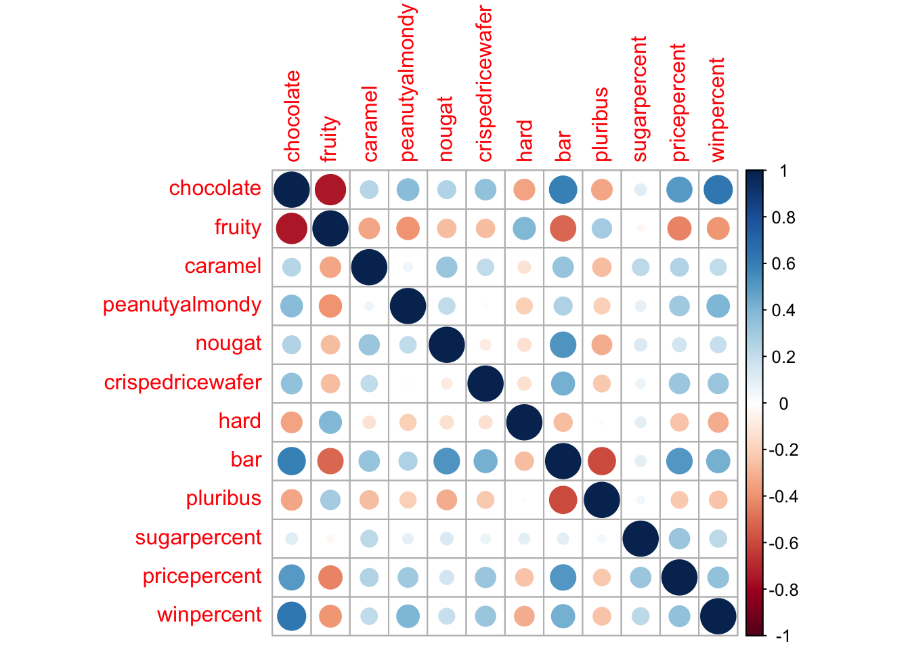
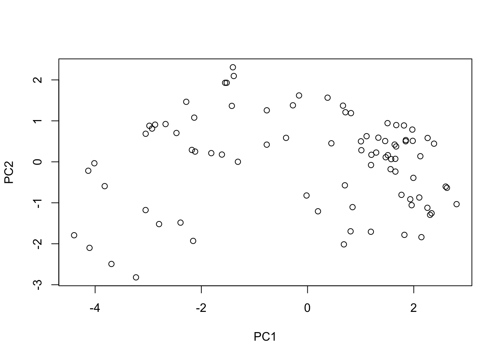
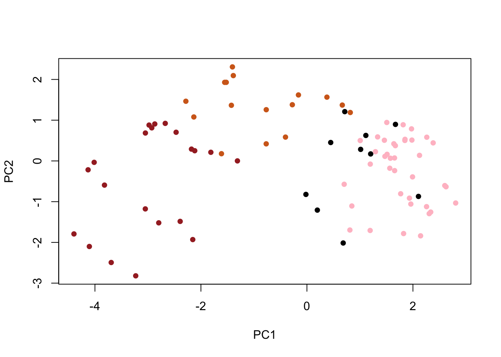
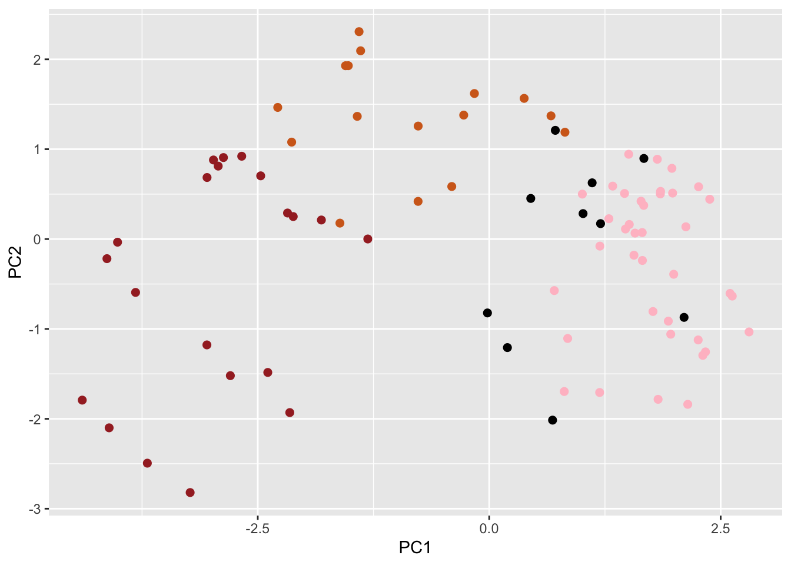
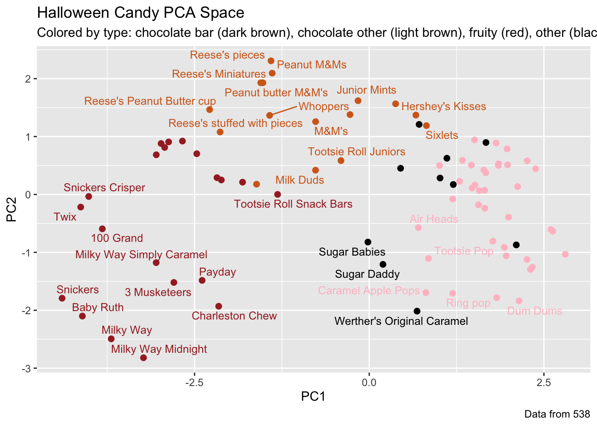
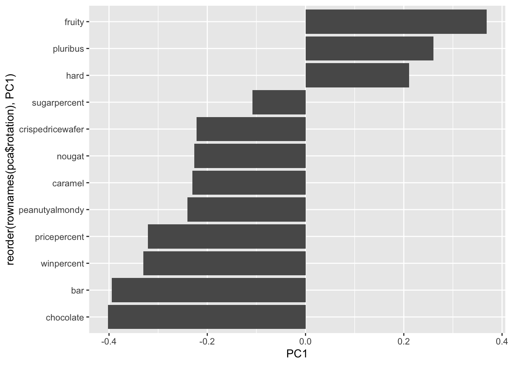

setwd("~/Desktop/bimm 143/class09")Class 9: Halloween Mini-Project
2. Importing candy data
candy_file <- "candy-data.csv"
candy = read.csv(candy_file, row.names=1)
head(candy) chocolate fruity caramel peanutyalmondy nougat crispedricewafer
100 Grand 1 0 1 0 0 1
3 Musketeers 1 0 0 0 1 0
One dime 0 0 0 0 0 0
One quarter 0 0 0 0 0 0
Air Heads 0 1 0 0 0 0
Almond Joy 1 0 0 1 0 0
hard bar pluribus sugarpercent pricepercent winpercent
100 Grand 0 1 0 0.732 0.860 66.97173
3 Musketeers 0 1 0 0.604 0.511 67.60294
One dime 0 0 0 0.011 0.116 32.26109
One quarter 0 0 0 0.011 0.511 46.11650
Air Heads 0 0 0 0.906 0.511 52.34146
Almond Joy 0 1 0 0.465 0.767 50.34755Q1. How many different candy types are in this dataset?
nrow(candy)[1] 85ans: 85
Q2. How many fruity candy types are in the dataset?
colSums(candy["fruity"])fruity
38 ans: 38
rownames(candy) [1] "100 Grand" "3 Musketeers"
[3] "One dime" "One quarter"
[5] "Air Heads" "Almond Joy"
[7] "Baby Ruth" "Boston Baked Beans"
[9] "Candy Corn" "Caramel Apple Pops"
[11] "Charleston Chew" "Chewey Lemonhead Fruit Mix"
[13] "Chiclets" "Dots"
[15] "Dum Dums" "Fruit Chews"
[17] "Fun Dip" "Gobstopper"
[19] "Haribo Gold Bears" "Haribo Happy Cola"
[21] "Haribo Sour Bears" "Haribo Twin Snakes"
[23] "Hershey's Kisses" "Hershey's Krackel"
[25] "Hershey's Milk Chocolate" "Hershey's Special Dark"
[27] "Jawbusters" "Junior Mints"
[29] "Kit Kat" "Laffy Taffy"
[31] "Lemonhead" "Lifesavers big ring gummies"
[33] "Peanut butter M&M's" "M&M's"
[35] "Mike & Ike" "Milk Duds"
[37] "Milky Way" "Milky Way Midnight"
[39] "Milky Way Simply Caramel" "Mounds"
[41] "Mr Good Bar" "Nerds"
[43] "Nestle Butterfinger" "Nestle Crunch"
[45] "Nik L Nip" "Now & Later"
[47] "Payday" "Peanut M&Ms"
[49] "Pixie Sticks" "Pop Rocks"
[51] "Red vines" "Reese's Miniatures"
[53] "Reese's Peanut Butter cup" "Reese's pieces"
[55] "Reese's stuffed with pieces" "Ring pop"
[57] "Rolo" "Root Beer Barrels"
[59] "Runts" "Sixlets"
[61] "Skittles original" "Skittles wildberry"
[63] "Nestle Smarties" "Smarties candy"
[65] "Snickers" "Snickers Crisper"
[67] "Sour Patch Kids" "Sour Patch Tricksters"
[69] "Starburst" "Strawberry bon bons"
[71] "Sugar Babies" "Sugar Daddy"
[73] "Super Bubble" "Swedish Fish"
[75] "Tootsie Pop" "Tootsie Roll Juniors"
[77] "Tootsie Roll Midgies" "Tootsie Roll Snack Bars"
[79] "Trolli Sour Bites" "Twix"
[81] "Twizzlers" "Warheads"
[83] "Welch's Fruit Snacks" "Werther's Original Caramel"
[85] "Whoppers" 2.2 What is your favorite candy?
candy["Red vines", ]$winpercent[1] 37.34852candy["Kit Kat", ]$winpercent[1] 76.7686candy["Tootsie Roll Snack Bars", ]$winpercent[1] 49.6535library(dplyr)
Attaching package: 'dplyr'The following objects are masked from 'package:stats':
filter, lagThe following objects are masked from 'package:base':
intersect, setdiff, setequal, unioncandy |>
filter(row.names(candy)=="Twix") |>
select(winpercent) winpercent
Twix 81.64291Q3. What is your favorite candy (other than Twix) in the dataset and what is it’s winpercent value?
>ans: 37.34852Q4. What is the winpercent value for “Kit Kat”?
>ans: 76.7686Q5. What is the winpercent value for “Tootsie Roll Snack Bars”?
>ans: 49.6535Side-note: the skimr::skim() function
library("skimr")Warning: package 'skimr' was built under R version 4.5.2skim(candy)| Name | candy |
| Number of rows | 85 |
| Number of columns | 12 |
| _______________________ | |
| Column type frequency: | |
| numeric | 12 |
| ________________________ | |
| Group variables | None |
Variable type: numeric
| skim_variable | n_missing | complete_rate | mean | sd | p0 | p25 | p50 | p75 | p100 | hist |
|---|---|---|---|---|---|---|---|---|---|---|
| chocolate | 0 | 1 | 0.44 | 0.50 | 0.00 | 0.00 | 0.00 | 1.00 | 1.00 | ▇▁▁▁▆ |
| fruity | 0 | 1 | 0.45 | 0.50 | 0.00 | 0.00 | 0.00 | 1.00 | 1.00 | ▇▁▁▁▆ |
| caramel | 0 | 1 | 0.16 | 0.37 | 0.00 | 0.00 | 0.00 | 0.00 | 1.00 | ▇▁▁▁▂ |
| peanutyalmondy | 0 | 1 | 0.16 | 0.37 | 0.00 | 0.00 | 0.00 | 0.00 | 1.00 | ▇▁▁▁▂ |
| nougat | 0 | 1 | 0.08 | 0.28 | 0.00 | 0.00 | 0.00 | 0.00 | 1.00 | ▇▁▁▁▁ |
| crispedricewafer | 0 | 1 | 0.08 | 0.28 | 0.00 | 0.00 | 0.00 | 0.00 | 1.00 | ▇▁▁▁▁ |
| hard | 0 | 1 | 0.18 | 0.38 | 0.00 | 0.00 | 0.00 | 0.00 | 1.00 | ▇▁▁▁▂ |
| bar | 0 | 1 | 0.25 | 0.43 | 0.00 | 0.00 | 0.00 | 0.00 | 1.00 | ▇▁▁▁▂ |
| pluribus | 0 | 1 | 0.52 | 0.50 | 0.00 | 0.00 | 1.00 | 1.00 | 1.00 | ▇▁▁▁▇ |
| sugarpercent | 0 | 1 | 0.48 | 0.28 | 0.01 | 0.22 | 0.47 | 0.73 | 0.99 | ▇▇▇▇▆ |
| pricepercent | 0 | 1 | 0.47 | 0.29 | 0.01 | 0.26 | 0.47 | 0.65 | 0.98 | ▇▇▇▇▆ |
| winpercent | 0 | 1 | 50.32 | 14.71 | 22.45 | 39.14 | 47.83 | 59.86 | 84.18 | ▃▇▆▅▂ |
Q6. Is there any variable/column that looks to be on a different scale to the majority of the other columns in the dataset?
>ans: columns n_missing and complete_rate, and row winpercentQ7. What do you think a zero and one represent for the candy$chocolate column?
>ans: Whether or not the candy has chocolate.3. Exploratory analysis
Q8. Plot a histogram of winpercent values
hist(candy$winpercent)
library("ggplot2")Warning: package 'ggplot2' was built under R version 4.5.2ggplot(candy, aes(winpercent)) + geom_histogram(fill="orange", col = "black")`stat_bin()` using `bins = 30`. Pick better value `binwidth`.
candy$winpercent[as.logical(candy$nougat)][1] 67.60294 56.91455 38.97504 73.09956 60.80070 46.29660 76.67378Q9. Is the distribution of winpercent values symmetrical?
> ans: No, it's a bit right skewed.Q10. Is the center of the distribution above or below 50%?
mean(candy$winpercent)[1] 50.31676summary(candy$winpercent) Min. 1st Qu. Median Mean 3rd Qu. Max.
22.45 39.14 47.83 50.32 59.86 84.18 > ans: The center is just barely below 50% (47.83)Q11. On average is chocolate candy higher or lower ranked than fruit candy?
mean(candy$chocolate)[1] 0.4352941mean(candy$fruity)[1] 0.4470588> ans: 0.4352941 (chocolate) < **0.4470588 (fruity)**Q12. Is this difference statistically significant?
choco <- candy$winpercent[as.logical(candy$chocolate)]
fruit <- candy$winpercent[as.logical(candy$fruity)]
t.test(choco, fruit)
Welch Two Sample t-test
data: choco and fruit
t = 6.2582, df = 68.882, p-value = 2.871e-08
alternative hypothesis: true difference in means is not equal to 0
95 percent confidence interval:
11.44563 22.15795
sample estimates:
mean of x mean of y
60.92153 44.11974 >ans: Yes, the results are satistically (p-value = 2.871e-08)4. Overall Candy Rankings
Q13. What are the five least liked candy types in this set?
library(dplyr)
head(candy[order(candy$winpercent),], n=5) chocolate fruity caramel peanutyalmondy nougat
Nik L Nip 0 1 0 0 0
Boston Baked Beans 0 0 0 1 0
Chiclets 0 1 0 0 0
Super Bubble 0 1 0 0 0
Jawbusters 0 1 0 0 0
crispedricewafer hard bar pluribus sugarpercent pricepercent
Nik L Nip 0 0 0 1 0.197 0.976
Boston Baked Beans 0 0 0 1 0.313 0.511
Chiclets 0 0 0 1 0.046 0.325
Super Bubble 0 0 0 0 0.162 0.116
Jawbusters 0 1 0 1 0.093 0.511
winpercent
Nik L Nip 22.44534
Boston Baked Beans 23.41782
Chiclets 24.52499
Super Bubble 27.30386
Jawbusters 28.12744l<- candy |> arrange(winpercent) |> head(5)
rownames(l)[1] "Nik L Nip" "Boston Baked Beans" "Chiclets"
[4] "Super Bubble" "Jawbusters" >ans: Nik L Nip, Boston Baked Beans, Chiclets, Super Bubble, Jawbustersm<-candy |> arrange(-winpercent) |> head(5)
k<-rownames(m)
noquote(k)[1] Reese's Peanut Butter cup Reese's Miniatures
[3] Twix Kit Kat
[5] Snickers Q14. What are the top 5 all time favorite candy types out of this set?
> ans: Reese's Peanut Butter cup, Reese's Miniatures, Twix, Kit Kat, Snickers
Q15. Make a first barplot of candy ranking based on winpercent values.
library(ggplot2)
ggplot(candy, aes(winpercent, rownames(candy))) + geom_col()
library(ggplot2)
ggplot(candy, aes(winpercent, reorder(rownames(candy),winpercent))) + geom_col()
##4.0.1 Time to add some useful color
my_cols=rep("black", nrow(candy))
my_cols[as.logical(candy$chocolate)] = "chocolate"
my_cols[as.logical(candy$bar)] = "brown"
my_cols[as.logical(candy$fruity)] = "pink"
ggplot(candy) +
aes(winpercent, reorder(rownames(candy),winpercent)) +
geom_col(fill=my_cols) 
Q17. What is the worst ranked chocolate candy? ans: Sixlets Q18. What is the best ranked fruity candy? ans: Starburst
5. Taking a look at pricepercent
library(ggrepel)
# How about a plot of win vs price
ggplot(candy) +
aes(winpercent, pricepercent, label=rownames(candy)) +
geom_point(col=my_cols) +
geom_text_repel(col=my_cols, size=3.3, max.overlaps = 5)Warning: ggrepel: 50 unlabeled data points (too many overlaps). Consider
increasing max.overlaps
Q19. Which candy type is the highest ranked in terms of winpercent for the least money - i.e. offers the most bang for your buck? ans: Reese’s Miniratures
Q20. What are the top 5 most expensive candy types in the dataset and of these which is the least popular? ans: Nik L Nip, Nestle Smarties, Ring Pop, Mr. Goodbar, Twix. Nik L Nip is the least popular.
6 Exploring the correlation structure
library(corrplot)corrplot 0.95 loadedcij <- cor(candy)
corrplot(cij)
Q22. Examining this plot what two variables are anti-correlated (i.e. have minus values)? ans: chocolate aqnd fruity
Q23. Similarly, what two variables are most positively correlated? ans: chocolate and win percent
7 Principal Component Analysis
pca <- prcomp(candy, scale= TRUE)
summary(pca)Importance of components:
PC1 PC2 PC3 PC4 PC5 PC6 PC7
Standard deviation 2.0788 1.1378 1.1092 1.07533 0.9518 0.81923 0.81530
Proportion of Variance 0.3601 0.1079 0.1025 0.09636 0.0755 0.05593 0.05539
Cumulative Proportion 0.3601 0.4680 0.5705 0.66688 0.7424 0.79830 0.85369
PC8 PC9 PC10 PC11 PC12
Standard deviation 0.74530 0.67824 0.62349 0.43974 0.39760
Proportion of Variance 0.04629 0.03833 0.03239 0.01611 0.01317
Cumulative Proportion 0.89998 0.93832 0.97071 0.98683 1.00000plot(pca$x[,1:2])
plot(pca$x[,1:2], col=my_cols, pch=16)
score plot…
r<-ggplot(pca$x) +
aes(x=PC1, y= PC2) +
geom_point(col = my_cols)# Make a new data-frame with our PCA results and candy data
my_data <- cbind(candy, pca$x[,1:3])
p <- ggplot(my_data) +
aes(x=PC1, y=PC2,
size=winpercent/100,
text=rownames(my_data),
label=rownames(my_data)) +
geom_point(col=my_cols, size =2)
p
library(ggrepel)
p + geom_text_repel(size=3.3, col=my_cols, max.overlaps = 5) +
theme(legend.position = "none") +
labs(title="Halloween Candy PCA Space",
subtitle="Colored by type: chocolate bar (dark brown), chocolate other (light brown), fruity (red), other (black)",
caption="Data from 538")Warning: ggrepel: 52 unlabeled data points (too many overlaps). Consider
increasing max.overlaps
ggplot(pca$rotation) +
aes(PC1, reorder(rownames(pca$rotation), PC1)) +
geom_col()
library(plotly)
Attaching package: 'plotly'The following object is masked from 'package:ggplot2':
last_plotThe following object is masked from 'package:stats':
filterThe following object is masked from 'package:graphics':
layoutggplotly(r)If you’re chocolate, you’re more likely to be caramel, expensive, a bar, have more sugar…
Q24. Complete the code to generate the loadings plot above. What original variables are picked up strongly by PC1 in the positive direction? Do these make sense to you? Where did you see this relationship highlighted previously?
> ans: Fruity, pluribus and hard. Yes! These make sense and they were in the heaat-map like corrlative figure.
8. Summary
Q25. Based on your exploratory analysis, correlation findings, and PCA results, what combination of characteristics appears to make a “winning” candy? How do these different analyses (visualization, correlation, PCA) support or complement each other in reaching this conclusion?
> ans: Being chocolatey, more expensive, in bar form, having more sugar, etc...The different analysis show relationships in different lights and therefore help paint a complete picture, enough to synthesize relationships.Just seeing what the data looks like….
losers = candy[which(candy$winpercent < 50),]
head(losers) chocolate fruity caramel peanutyalmondy nougat
One dime 0 0 0 0 0
One quarter 0 0 0 0 0
Boston Baked Beans 0 0 0 1 0
Candy Corn 0 0 0 0 0
Caramel Apple Pops 0 1 1 0 0
Charleston Chew 1 0 0 0 1
crispedricewafer hard bar pluribus sugarpercent pricepercent
One dime 0 0 0 0 0.011 0.116
One quarter 0 0 0 0 0.011 0.511
Boston Baked Beans 0 0 0 1 0.313 0.511
Candy Corn 0 0 0 1 0.906 0.325
Caramel Apple Pops 0 0 0 0 0.604 0.325
Charleston Chew 0 0 1 0 0.604 0.511
winpercent
One dime 32.26109
One quarter 46.11650
Boston Baked Beans 23.41782
Candy Corn 38.01096
Caramel Apple Pops 34.51768
Charleston Chew 38.97504winners = candy[which(candy$winpercent >= 50),]
head(winners) chocolate fruity caramel peanutyalmondy nougat
100 Grand 1 0 1 0 0
3 Musketeers 1 0 0 0 1
Air Heads 0 1 0 0 0
Almond Joy 1 0 0 1 0
Baby Ruth 1 0 1 1 1
Haribo Gold Bears 0 1 0 0 0
crispedricewafer hard bar pluribus sugarpercent pricepercent
100 Grand 1 0 1 0 0.732 0.860
3 Musketeers 0 0 1 0 0.604 0.511
Air Heads 0 0 0 0 0.906 0.511
Almond Joy 0 0 1 0 0.465 0.767
Baby Ruth 0 0 1 0 0.604 0.767
Haribo Gold Bears 0 0 0 1 0.465 0.465
winpercent
100 Grand 66.97173
3 Musketeers 67.60294
Air Heads 52.34146
Almond Joy 50.34755
Baby Ruth 56.91455
Haribo Gold Bears 57.11974